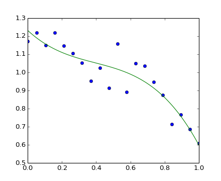
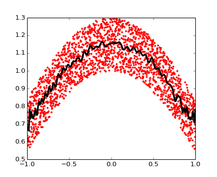

Contenido
Numpy contiene polinomios en diferentes bases :
Por ejemplo, :
>>> p = np.poly1d([3, 2, -1])
>>> p(0)
-1
>>> p.roots
array([-1. , 0.33333333])
>>> p.order
2
>>> x = np.linspace(0, 1, 20)
>>> y = np.cos(x) + 0.3*np.random.rand(20)
>>> p = np.poly1d(np.polyfit(x, y, 3))
>>> t = np.linspace(0, 1, 200)
>>> plt.plot(x, y, 'o', t, p(t), '-')
[<matplotlib.lines.Line2D object at ...>, <matplotlib.lines.Line2D object at ...>]
[source code, hires.png, pdf]
Ver http://docs.scipy.org/doc/numpy/reference/routines.polynomials.poly1d.html para más información.
Numpy tiene una interfaz para polinomios más sofisticada , que soporta por ejemplo bases de Chebyshev.
:
>>> p = np.polynomial.Polynomial([-1, 2, 3]) # coeficientes en orden diferente!
>>> p(0)
-1.0
>>> p.roots()
array([-1. , 0.33333333])
>>> p.degree() # generalmente en polinomios no siempre muestra el 'orden'
2
Ejemplo de uso de polinomios en bases de Chebyshev, para polinomios en el rango [-1, 1]:
>>> x = np.linspace(-1, 1, 2000)
>>> y = np.cos(x) + 0.3*np.random.rand(2000)
>>> p = np.polynomial.Chebyshev.fit(x, y, 90)
>>> t = np.linspace(-1, 1, 200)
>>> plt.plot(x, y, 'r.')
[<matplotlib.lines.Line2D object at ...>]
>>> plt.plot(t, p(t), 'k-', lw=3)
[<matplotlib.lines.Line2D object at ...>]
[source code, hires.png, pdf]
Los polinomios de Chebyshev tienen algunas ventajas en interpolación.
Ejemplo: populations.txt:
# year hare lynx carrot 1900 30e3 4e3 48300 1901 47.2e3 6.1e3 48200 1902 70.2e3 9.8e3 41500 1903 77.4e3 35.2e3 38200
>>> data = np.loadtxt('data/populations.txt')
>>> data
array([[ 1900., 30000., 4000., 48300.],
[ 1901., 47200., 6100., 48200.],
[ 1902., 70200., 9800., 41500.],
...
>>> np.savetxt('pop2.txt', data)
>>> data2 = np.loadtxt('pop2.txt')
Nota
Si usted tiene un archivo de texto complicado, puede probar con:
Recuerde: Navegando por el sistema de archivos con IPython
In [1]: pwd # muestra el directorio actual
'/home/user/stuff/2011-numpy-tutorial'
In [2]: cd ex
'/home/user/stuff/2011-numpy-tutorial/ex'
In [3]: ls
populations.txt species.txt
Usando Matplotlib:
>>> img = plt.imread('data/elephant.png')
>>> img.shape, img.dtype
((200, 300, 3), dtype('float32'))
>>> plt.imshow(img)
<matplotlib.image.AxesImage object at ...>
>>> plt.savefig('plot.png')
>>> plt.imsave('red_elephant', img[:,:,0], cmap=plt.cm.gray)
Esto guarda solo un canal (de RGB):
>>> plt.imshow(plt.imread('red_elephant.png'))
<matplotlib.image.AxesImage object at ...>
Otras bibliotecas:
>>> from scipy.misc import imsave
>>> imsave('tiny_elephant.png', img[::6,::6])
>>> plt.imshow(plt.imread('tiny_elephant.png'), interpolation='nearest')
<matplotlib.image.AxesImage object at ...>
[source code, hires.png, pdf]
Numpy tiene su propio formato binario, no es portátil pero con eficiente E/S:
>>> data = np.ones((3, 3))
>>> np.save('pop.npy', data)
>>> data3 = np.load('pop.npy')
... si alguien lo usa, es probable que haya una biblioteca de Python para ello.
Ejercicio: Archivos de datos de texto
Escribir un script en Python para cargar los datos de populations.txt:: y elimine la última columna y las primeras 5 filas. Guarde el pequeño conjunto de datos en pop2.txt.
El interior de Numpy
Si está interesado en el funcionamiento interno de Numpy, hay una buena discusión en Numpy avanzado.

{kind=link}
{kind=link}
{kind=link}